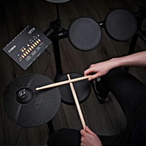

Електронні
Електро барабани - це електронний варіант барабанів, що використовує сенсори для генерації звуків, що можуть бути модифіковані та записані через підключення до комп'ютера або звукової систем.
Більше інформаціїЧи можемо ми вам допомогти?